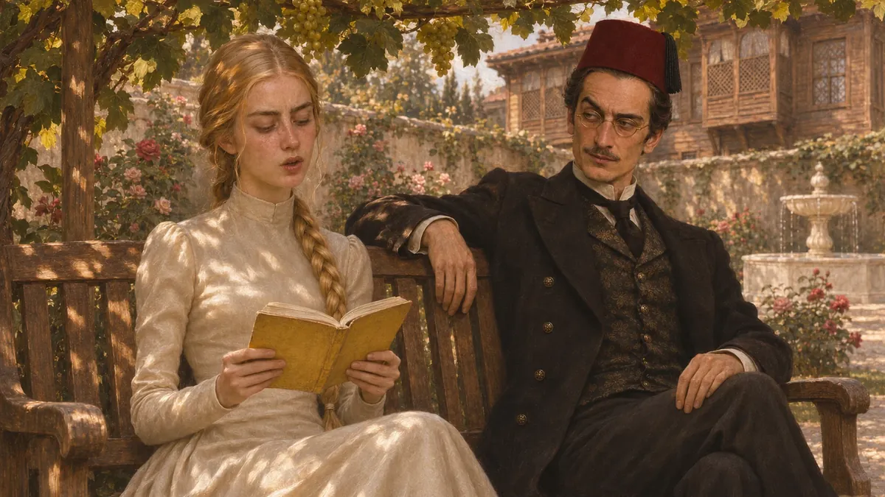

Aşkın Bedeli
İstanbul, 1890'lar. Bir yalı, bir sözlü, bir üvey anne ve kimsenin yüksek sesle söylemediği sırlar.
On sekiz yaşındaki Feride'nin hayatına sen yön ver. Her seçim bir kapıyı açar, bir başkasını kapatır: kime güveneceğine, kimi seveceğine ve neyi saklayacağına sen karar ver.
Oyna

Konaktan Haberler
Karakterler
Konağın her odasında başka bir hesap var. Kime güveneceksin?

Seçimlerin hikâyeyi yazar
Aşkın Bedeli bir okuma değil, bir yaşama oyunu. Her bölümde on beşe yakın karar verirsin ve her kararın izi sonraki satırda, sahne resminde, defterinde görünür.
- GönülKenan mı, Süha mı, yoksa Remzi mi? Her talibin sana ilgisi senin sözlerinle büyür ya da söner.
- KozKapı aralığında duyduğun, gözünle gördüğün her sır bir koz olur. Ne zaman açacağını sen seçersin.
- GardropGök mavisi ipekli mi, gösterişli tafta mı? Ne giydiğin, salonda nasıl karşılanacağını değiştirir.
- AlbümSeçimlerine göre açılan anlar yağlı boya tablolar olarak albümünde birikir.


Birinci Sezon
On altı bölüm. Her bölüm 10–15 dakika.

Romandan oyuna
Fatma Aliye Hanım (1862–1936), Türk edebiyatının ilk kadın romancılarındandır. Muhadarat, 1892'de yayımlandı ve konak hayatını, kadınların sesini, evlilik pazarlığını ve bir genç kızın onuru için verdiği mücadeleyi anlattı.
Aşkın Bedeli bu romandan esinlendi. Bazı adlar ve olaylar değişti, Feride'ye romandakinden daha çok söz hakkı verildi. Ama ruhu aynı: bir genç kız, ona biçilen hayatı sorgulamaya başlıyor.
Hikâyeye başla